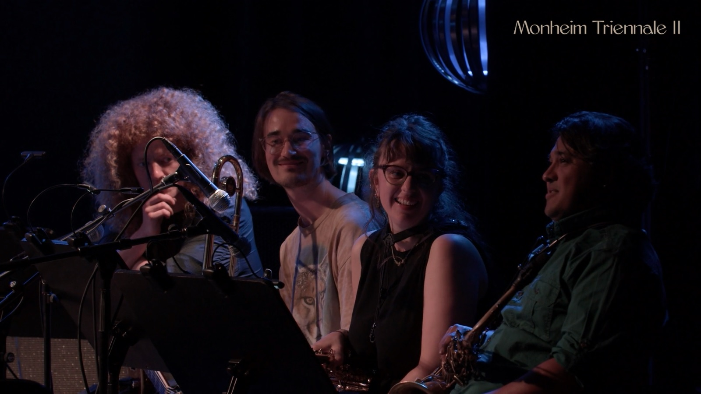
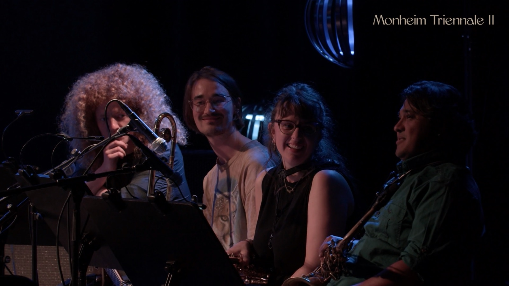

Francesca Fantini is a saxophonist, improviser, and artistic researcher whose work moves fluidly between classical music, contemporary repertoire, and free improvisation. Her artistic practice explores embodiment, listening, and non-idiomatic improvisation, often situated within transdisciplinary and experimental contexts. Through sound, gesture, and collaborative performance, Francesca investigates how the body functions as both instrument and site of knowledge, challenging conventional hierarchies of musical form and authorship.
Francesca’s milestones as performers include participations at Derby Elettrico Improvisation Orchestra, at Monheim Triennale II, with signature artist Selendis Sebastian Alexander Johnson, at EUYWO 2019. She has performed extensively across Europe in concert halls, festivals, and experimental spaces, including Muziekgebouw Eindhoven, Saarbrücken Radio Hall, Intro in Situ, Muzikos Ruduo Festival.
She is an active collaborator in several international projects, including the contemporary improvisation trio airkeychains, the European Music Collective, and Duo Taíta with pianist Yi-Ling Wu.
As Artistic Researcher she gave presentations of her work for “Oi Dialogoi” congresses and for the First International Doctoral Symposium of Siena Jazz.
As Artistic Curator, she designed the week “Musica contemporanea: tra interpretazione e improvvisazione” at the Conservatory of Brescia. The project was funded by Goethe Institut.
As an educator, she gave masterclasses and workshops in Higher Education Institutions like Conservatory of Brescia, National Academy of Dance of Rome.
In 2024, she was recognized as Artist of the Month by Giovani Artisti Italiani. She is awardee of the 2026 grant for Levi Campus. Since February 2026 she has been artist in residence at Intro in Situ, Maastricht, where she is developing her project “Bodies of Sound”.
Francesca earned her Bachelor’s degree in Classical Saxophone from Conservatorium Maastricht in 2021. In 2024, she completed a Master’s degree in Chamber Music at the Conservatory of Brescia with highest honors. During her Master’s Programme, she further expanded her artistic language at the Lithuanian Academy of Music and Theatre in Vilnius, where she focused on free improvisation and contemporary chamber music, developing an approach that bridges rigorous technique with exploratory sonic research.
Alongside her performance practice, Fantini is currently pursuing a PhD at Roma Tre University, where her research centers on embodiment and non-idiomatic improvisation in transdisciplinary artistic environments.
 
